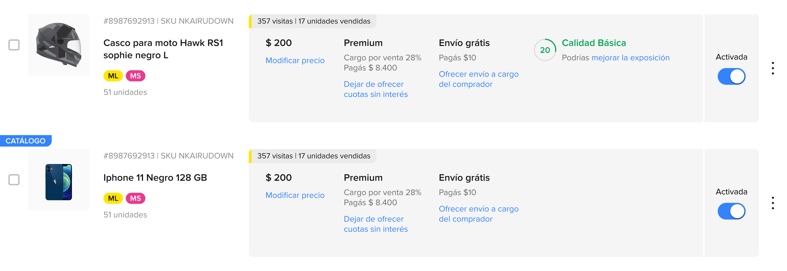

Framing the Problem
Context
For sellers to view their competition status on Mercado Libre, they currently have to go through a long and delayed flow — which in today's context is completely unnecessary. The goal was to simplify this, giving sellers direct access to their competition status so they can identify what to correct in their listing to improve their position.
Key Question
Does shortening the seller's path to their competition data actually benefit them — or is the current multi-step flow something they're used to?
"How might we give every Mercado Libre seller instant visibility into their competitive position — without interrupting the workflow they already rely on daily?"
Solution Direction
Surface the competition status directly within the publication listing — the screen sellers are already on. Eliminate the detour through the edit flow, making the information available at the point of highest daily engagement.
Objectives
- Give sellers an interface to check their competition status in a simpler, more accessible way.
- Reduce the number of flows and clicks a seller needs to understand their competitive standing.
Design Thinking Process
The process started with quantitative surveys and qualitative interviews to understand where sellers spent the most time within the platform. Research revealed that the publication listing was the highest-engagement screen — and yet competition data lived 2 screens deeper. The design challenge shifted from "redesigning competition data" to "repositioning it where sellers already are."
Current Flow: How Does the Seller Access the Listing?
Entry point
How does the seller access the publication listing?
Problem identified
The seller must go through 3 separate steps before they can view their competition status.
Current flow to check competition status
The seller opens the options menu and taps "Listado de publicaciones"
The seller sees all active and inactive listings across Mercado Libre and Mercado Shops
The seller must open the edit view of each listing just to see their competition status — extra step, extra friction
3
Steps to reach competition data
Manual per listing
Required action
Sellers must repeat this detour for every catalog listing — compounding friction across their entire portfolio
Research
The research process combined surveys and platform data to understand where sellers spent most of their time. Based on these findings, a new journey map was developed to redirect attention to the publication listing — the screen with the highest daily engagement — as the ideal placement for competition status visibility.
How many sellers struggle to view their competition status?
25
Have trouble visualizing their competition status
7
Find it easy to locate their competition status
of 32 sellers surveyed
Interviews
"Competition status is very important to me because it guides me to improve my sales conditions — but it's always a slow process to find it."
"Competing in catalog allows me to sell much more, but I'd love to see my competition status somewhere more accessible — right now it's buried."
"Sometimes I find it difficult to correct my sales conditions — finding the guide to fix them isn't straightforward."
Solution
The current publication listing contains all the information for a traditional listing — price, shipping, status. But for catalog listings, that space is empty. This is the opportunity: instead of sending sellers through an edit detour, surface the competition status right there, in that empty slot, on the screen they're already using.

The empty slot in catalog listings — identified as the ideal placement for surfacing competition status inline
We can cut one step entirely by leveraging the fact that the publication listing is already where sellers spend the most time. Embedding competition status there eliminates the need to enter the edit flow at all.
Redesigned Flow
By embedding competition status directly in the listing, the flow goes from 3 steps to 2 — and the seller never needs to leave the screen they're already on.
The seller opens the options menu and taps "Listado de publicaciones"
Competition status is now visible inline — no extra steps, no detour into the edit flow
3 → 2
Steps reduced
1 less
Screen to navigate
0
Extra taps needed
Publication Listing with Competition Status
The redesigned listing gives each seller an at-a-glance read of their competitive position — from "PERDIENDO" to "GANANDO" — with actionable guidance surfaced directly alongside the listing card. Sellers can immediately see which conditions to improve without navigating away from the screen they're already on.
Te llevas el 10% de las ventas — 4 conditions to improve to become more competitive
Te llevas el 60% de las ventas — 3 conditions to improve to reach the top
Te llevas el 100% de las ventas — no conditions to improve, keep it up!
Impact
Sellers no longer need to enter the edit flow to check their position — competition data comes to them, not the other way around.
The redesign identified the publication listing — the highest-engagement screen — as the ideal placement for actionable seller intelligence, validating the core research finding.